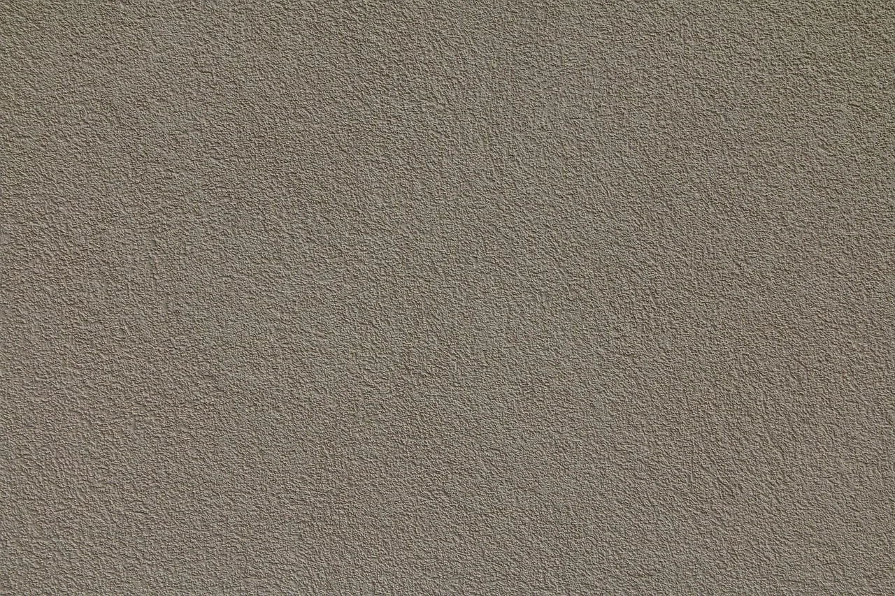

صورة توضيحية — Photo by atimedia on Pixabay
مقاول بروفايل الرياض: 4 أفكار لواجهة أكثر أناقة 053 116 9312
إذا كنت تريد أن تمنح منزلك إطلالة مختلفة، فإن مقاول بروفايل الرياض من العبارات التي يبحث عنها أصحاب الفلل والمباني عند التفكير في تجديد الواجهات وتحسين مظهرها، فاختيار ملمس البروفايل ولونه وطريقة تطبيقه يمكن أن يغير شكل المبنى ويمنحه طابعا معماريا مميزا.
لكن الوصول إلى الواجهة التي تتخيلها لا يعتمد على اختيار لون جميل فقط، بل يحتاج إلى فهم حالة الجدران ونوع التشطيب المناسب وطريقة تجهيز السطح قبل التنفيذ، كما أن تنسيق الواجهة الخارجية مع الأبواب والنوافذ والألوان المحيطة يساعد على إبراز جمال المبنى، لذلك من المهم دراسة الخيارات المتاحة قبل الاتفاق على أعمال الدهان أو التشطيب.
مقاول بروفايل الرياض: واجهة تعكس ذوقك من النظرة الأولى
الواجهة هي أول ما يلفت الانتباه إلى المبنى، ولهذا فإن تجديدها يستحق التخطيط بعناية واختيار مقاول بروفايل الرياض متمكن ولديه خبرة، سواء كنت تفضل المظهر العصري الهادئ أو الملمس البارز الذي يمنح الجدران حضورا واضحا، وهذه أهم الجوانب التي تساعدك على تحديد الاختيار المناسب:
- اختيار ملمس البروفايل: تتنوع التشطيبات بين الملمس الناعم والخشن والأنماط المحببة، ويعتمد الاختيار على التصميم المعماري والنتيجة التي تريد ظهورها على الواجهة.
- تحديد اللون المناسب: اختر درجة تتماشى مع شكل المبنى والأبواب والنوافذ، واطلب معاينة عينة اللون على مساحة مناسبة قبل اعتمادها.
- فحص الجدران قبل التنفيذ: يجب تحديد الشروخ والتقشر ومشكلات الرطوبة ومعالجتها بالطريقة المناسبة قبل تطبيق التشطيب الجديد.
- مراعاة ظروف الطقس: تحتاج الواجهات في الرياض إلى مواد مخصصة للاستخدام الخارجي، مع مراجعة مواصفات المنتج ومدى ملاءمته للتعرض للشمس والغبار والتغيرات الجوية.
- التأكد من تفاصيل العرض: اطلب توضيح نوع الخامة ومرحلة التأسيس وطريقة التطبيق والتكلفة الإجمالية، حتى تكون المقارنة بين عروض التنفيذ واضحة.
معلم بروفايل باكستاني: كيف تختار الفني المناسب؟
قد يستخدم بعض العملاء عبارة معلم بروفايل مقاول بروفايل باكستاني عند البحث عن فني لتنفيذ واجهات المنازل، لكن الجنسية وحدها لا تحدد مستوى المهارة، فالأهم هو التخصص الفعلي وجودة الأعمال السابقة ووضوح الاتفاق والقدرة على تنفيذ التفاصيل المطلوبة:
- راجع الأعمال السابقة: اطلب صورا واضحة لواجهات نفذها الفني، واهتم بانتظام الملمس وتناسق اللون ونظافة حدود التشطيب.
- اسأل عن خطوات التنفيذ: ينبغي أن يوضح لك طريقة تجهيز الجدار ومعالجة العيوب وتطبيق الطبقات وفقا لمتطلبات المادة المستخدمة.
- ناقش نوع البروفايل: وضح ما إذا كنت تفضل ملمسا ناعما أو خشنا أو زخرفيا، وتأكد من أن الفني لديه خبرة في النمط الذي اخترته.
- اطلب تسعيرة مفصلة: ينبغي أن تشمل التسعيرة مساحة العمل ونوع الخامة والتجهيزات المطلوبة وما إذا كانت المواد وأجور التنفيذ مشمولة.
- اتفق على موعد التسليم: حدد الجدول المتوقع للعمل وآلية التعامل مع التعديلات أو الظروف التي قد تؤثر في التنفيذ.
اطلع على: مقاول دهانات بالرياض
دهان بروفايل خارجي جوتن: اختيار الخامة المناسبة للواجهة
عند التفكير في مقاول بروفايل الرياض جوتن، من المهم التمييز بين اسم العلامة التجارية واسم المنتج المخصص للاستخدام المطلوب، لأن المنتجات تختلف في خصائصها وطريقة تطبيقها والأسطح التي تناسبها، ولذلك ينبغي التحقق من المواصفات قبل الشراء:
- تأكد من المنتج المحدد: اسأل عن اسم المنتج الكامل، وتحقق من أنه مخصص للواجهات الخارجية وليس للاستخدام الداخلي فقط.
- راجع مقاومة العوامل الجوية: اطلع على بيانات الشركة المصنعة المتعلقة بملاءمة المنتج للشمس والرطوبة والتغيرات الجوية وظروف الاستخدام المتوقعة.
- جهز السطح بصورة صحيحة: يجب إزالة الأجزاء المتقشرة وتنظيف الجدار ومعالجة العيوب قبل تطبيق طبقة الأساس والتشطيب النهائي حسب النظام المستخدم.
- اختر اللون بعد المعاينة: قد يبدو اللون مختلفا بحسب الإضاءة ومساحة الواجهة، لذا يفضل مراجعة عينة قبل اعتماد اللون على المبنى بالكامل.
- التزم بتعليمات التطبيق: يجب مراعاة طريقة التحضير وعدد الطبقات وظروف التنفيذ ومدة الجفاف التي تحددها الشركة المصنعة.
اقرأ أيضًا: معلم بويه الرياض
دهان بروفايل داخلي: هل يناسب جدران منزلك؟
قد يرغب بعض أصحاب المنازل في استخدام تأثيرات ملمس البروفايل داخل المساحات السكنية للحصول على جدار مميز، لكن من المهم التأكد أولا من نوع المادة وما إذا كانت مصممة للاستخدام الداخلي، لأن متطلبات الجدران الداخلية تختلف عن متطلبات الواجهات الخارجية:
- حدد الجدار المراد إبرازُه: يمكن أن يكون الجدار الرئيسي في غرفة المعيشة أو مدخل المنزل نقطة مناسبة للتشطيب المميز، بحسب التصميم والمساحة.
- اختر ملمسا متناسقا: قد يناسب الملمس الهادئ الغرف الصغيرة، بينما يمكن أن يضيف الملمس البارز حضورا أقوى في المساحات الواسعة.
- راجع خصائص المادة: تأكد من ملاءمتها للداخل وسهولة تنظيفها وطريقة صيانتها، ولا تستخدم منتجا خارجيا داخل المنزل دون الرجوع إلى تعليماته.
- نسق الألوان مع الأثاث: اختر درجة تتماشى مع الأرضيات والستائر والإضاءة حتى لا يبدو الجدار منفصلا عن بقية عناصر الغرفة.
- قارن البدائل الديكورية: قد يكون ورق الجدران أو التكسيات الخشبية أو بديل الرخام مناسبا أكثر إذا كان هدفك إضافة ملمس أو تفاصيل مختلفة.
ألوان البروفايل التي تمنح منزلك طابعا مميزا
قد يكون اللون هو أول ما يجذبك إلى تصميم واجهة معينة، لكن نجاح الاختيار يعتمد على مقاول بروفايل الرياض المتميز وتناسق الألوان مع شكل المبنى والإضاءة المحيطة والعناصر المعمارية، لذلك من المفيد التفكير في الصورة الكاملة قبل اعتماد الدرجة النهائية:
- الدرجات المحايدة: مثل الأبيض المائل إلى الدفء والبيج والرمادي الفاتح، ويمكن أن تمنح الواجهة مظهرا هادئا يسهل تنسيقه مع عناصر مختلفة.
- الألوان الترابية: قد تناسب المباني التي تعتمد على الطابع الطبيعي، خاصة عند تنسيقها مع الأبواب والنوافذ والخامات ذات الألوان الدافئة.
- التباين المدروس: يمكن استخدام لون أغمق في بعض التفاصيل لإبراز الإطارات أو العناصر المعمارية، مع الحفاظ على الانسجام العام.
- تجربة اللون ميدانيا: لا تعتمد على الصور وحدها، بل شاهد العينة في ظروف الإضاءة الفعلية، لأن الشمس قد تؤثر في الانطباع عن الدرجة.
- الاهتمام بتنسيق التفاصيل: راع لون السور والأبواب والنوافذ وأي خامات ظاهرة في الواجهة، حتى تبدو العناصر متكاملة بدلا من التنافس بصريا.
شاهد الآن: معلم شيبورد في الرياض: 0531169312 لتجديد منزلك بلمسة عصرية
ديكورات الأحلام: لمسات داخلية تكمل جمال منزلك
إذا كان هدفك تطوير مظهر المنزل من الداخل بالتزامن مع تجديد الواجهة، فإن ديكورات الأحلام تقدم مقاول بروفايل الرياض لخدمات الديكور الداخلي وتشمل الجبس بورد وبديل الرخام وورق الجدران والباركيه والتكسيات الخشبية والشيبورد، وهي خيارات تساعدك على تنسيق التفاصيل الداخلية مع الطابع الذي تفضله:
- الموقع الإلكتروني: ديكورات الأحلام للاطلاع على الخدمات المنشورة وأفكار الديكور الداخلي.
- رقم الهاتف والواتساب: 0531169312 للاستفسار عن الخدمات وتفاصيل مشروعك.
- تركيب الديكورات الداخلية: تعرف على الخدمة للاطلاع على خيارات تنسيق المساحات والخامات.
- الجبس بورد: خيار لتجديد الأسقف والجدران بتصاميم عصرية تتناسب مع طبيعة المساحة.
- بديل الرخام وورق الجدران: حلان لإضافة تفاصيل جمالية إلى الجدران وتغيير أجواء الغرف.
- الباركيه والتكسيات الخشبية والشيبورد: خيارات لتنسيق الأرضيات والجدران والأسقف بحسب التصميم المطلوب.
الخاتمة
الواجهة الأنيقة تبدأ باختيار التشطيب المناسب لطبيعة المبنى ومراعاة حالة الجدران وجودة الخامة وتناسق اللون قبل التنفيذ، لذلك فإن البحث عن مقاول بروفايل الرياض ينبغي أن يعتمد على وضوح المواصفات ومراجعة الأعمال السابقة وتفاصيل التكلفة، لا على المظهر أو السعر وحدهما، وإذا كنت تخطط لاستكمال تجديد منزلك بلمسات داخلية متناسقة، فتفضل بزيارة موقع ديكورات الأحلام لواقع ملموس مفعم بالجمال والرقي.
الأسئلة الشائعة
ما الفرق بين البروفايل الخارجي والداخلي؟
يختلف المقاول المختص الخارجي عن التشطيبات الداخلية في متطلبات الاستخدام والمواد المناسبة وظروف التعرض للعوامل الجوية، فالواجهة الخارجية تحتاج إلى منتج مخصص للظروف الخارجية وتجهيز يناسب حالة الجدار، بينما يجب اختيار المواد الداخلية وفقا لبيئة الغرفة وطريقة التنظيف والمظهر المطلوب، لذلك ينبغي التحقق من مواصفات المنتج قبل استخدامه في أي من المكانين.
هل دهان بروفايل جوتن مناسب لجميع الواجهات؟
لا يمكن افتراض أن منتجا واحدا يناسب جميع الواجهات، لأن الاختيار يعتمد على حالة السطح ونوع التشطيب وظروف الموقع وتعليمات الشركة المصنعة، قبل الشراء تأكد من من اسم المنتج ومجال استخدامه وطريقة تجهيز الجدار واستعن بمختص لتحديد مدى ملاءمته للواجهة التي تريد تجديدها.
كيف أختار لون البروفايل المناسب لمنزلي؟
ابدأ بمراعاة تصميم المبنى وألوان الأبواب والنوافذ والسور، ثم حدد ما إذا كنت تفضل مظهرا هادئا بدرجات محايدة أو تباينا أوضح في بعض التفاصيل، ومن الأفضل تجربة عينة اللون في الإضاءة الطبيعية قبل تطبيقه على مساحة كبيرة لأن مظهر اللون قد يختلف بين الصور والواقع.
هل تبحث عن تنفيذ احترافي لمشروعك؟
نحن في ديكورات الأحلام نوفر لك أفضل الخامات وأمهر الفنيين في الرياض.
تواصل معنا عبر واتساب